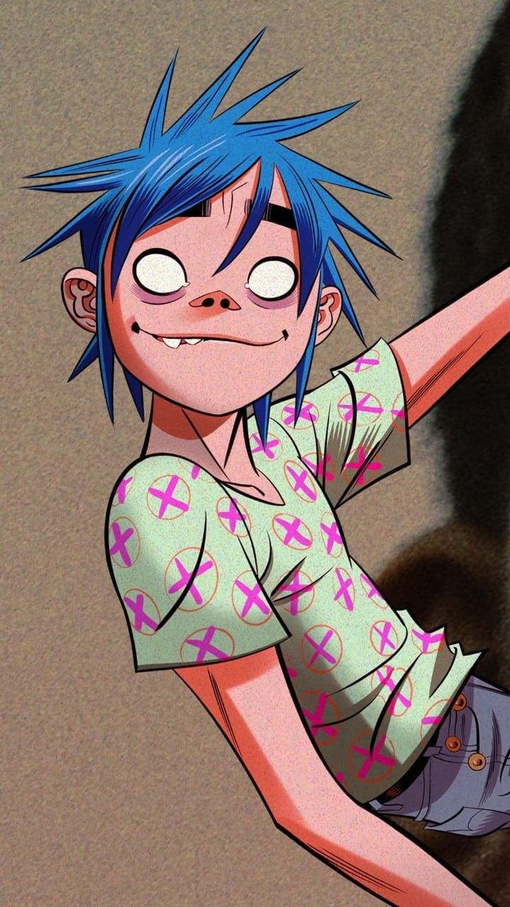

| Spider man |
 |
Agust 1962 |
Super hero |
- Cultural Impact: Spider-Man has become a symbol of the "everyman" hero, resonating with audiences due to his relatable struggles and personal challenges.
- Long-Running Series: Spider-Man's comic series, starting with Amazing Fantasy #15 (1962), has been continuously published, with numerous spin-offs and adaptations.
- Successful Adaptations: Spider-Man has been adapted into multiple successful media formats, including television shows, films, and video games. His live-action films have been box office hits, including Tobey Maguire's Spider-Man trilogy, Andrew Garfield's The Amazing Spider-Man films, and Tom Holland's portrayal in the Marvel Cinematic Universe.
|
- "The Night Gwen Stacy Died" (The Amazing Spider-Man #121-122): This landmark storyline, written by Gerry Conway and illustrated by Gil Kane, is one of Spider-Man's most significant and emotional arcs. It deals with the death of Peter Parker's girlfriend, Gwen Stacy, and has had a profound impact on the character's development.
- "Spider-Verse" (2014-2015): Written by Dan Slott, this crossover event features multiple versions of Spider-Man from different universes, highlighting the character's extensive multiverse. It was well-received for its innovative storytelling and artistic style.
- "Ultimate Spider-Man" (2000-2009): Created by Brian Michael Bendis and Mark Bagley, this series reimagines Spider-Man for a modern audience. It introduced a new version of the character, Miles Morales, who has since become a popular and influential figure in his own right.
|
| 2-D |
 |
May 1978 |
Singer |
- Formation of Gorillaz: As part of the virtual band Gorillaz, 2D has been a central figure in one of the most innovative and genre-blending music projects of the 21st century. Gorillaz is known for its unique mix of alternative rock, hip-hop, and electronic music.
- Critical and Commercial Success: Gorillaz's debut album, Gorillaz (2001), was critically acclaimed and commercially successful, featuring hits like "Clint Eastwood" and "19-2000." This success helped solidify 2D's place in popular culture.
- Virtual Band Concept: Gorillaz is pioneering in the use of virtual band members, combining animation and music in a way that was groundbreaking when the band first emerged. This concept has influenced other artists and media.
|
- "Clint Eastwood" (2001): The debut single from Gorillaz's first album, featuring 2D's distinctive vocals. The track became a defining song of the early 2000s and helped establish the band's unique sound.
- "Feel Good Inc." (2005): From the album Demon Days, this song is one of Gorillaz's most famous tracks, featuring a memorable bassline and catchy chorus, with 2D's vocals prominently featured.
- "On Melancholy Hill" (2010): From the album Plastic Beach, this track showcases a more melancholic and introspective side of 2D. The song was well-received and became a fan favorite.
|
| Mario Castañeda |
|
Jun 1962 |
Voice actor |
- Lifetime Achievement Recognition: Mario Castañeda is often invited to conventions and has received awards for his contributions to the voice acting industry, particularly for his work in anime and film dubbing.
- Directing and Coaching: Beyond acting, he has also worked as a dubbing director and voice coach, shaping future talents in the voiceover industry.
- Captain John McClane in "Die Hard" FilmsAnother famous role was as the voice of John McClane (played by Bruce Willis) in the Die Hard films for the Latin American audience.
|
- Goku from "Dragon Ball Z" Mario Castañeda's most iconic role is the voice of Goku in the Latin American Spanish dub of Dragon Ball Z. His portrayal of the character is beloved by fans across Latin America, making him a legend in the world of anime dubbing.
- Bruce Banner/The Hulk in Marvel Movies He is the official Latin American voice of Bruce Banner/The Hulk, voiced by Mark Ruffalo, in the Marvel Cinematic Universe (MCU) films. His voice work here has further cemented his status as a highly versatile voice actor.
- Jim Carrey in Multiple FilmsCastañeda has frequently voiced Jim Carrey in films like Ace Ventura: Pet Detective, The Mask, and Bruce Almighty, contributing to his popularity as the go-to voice for Carrey in Spanish-speaking countries.
|